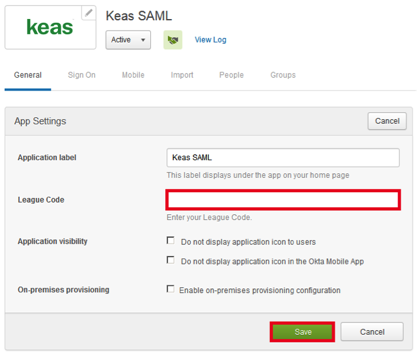

Email Keas Support and request that they enable SAML for your account.
Download the following Public Certificate and attach it to the email.Sign into the Okta Admin dashboard to generate this value.
Copy and paste the following text into the message and label it Sign-On/Redirect URL.
Sign into the Okta Admin dashboard to generate this value.Keas will process your request and provide you with a League Code.
In Okta, go to the General tab for the Keas application and select Edit.
Enter the League Code you received, as shown below.
Select the Save button.
Done!
Note: IdP-initiated flows and Just In Time (JIT) provisioning are supported. SP-initiated flows are not supported.